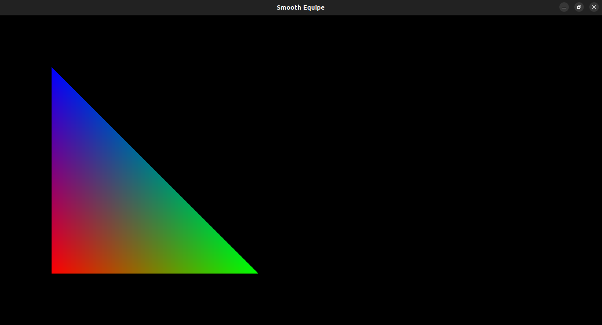
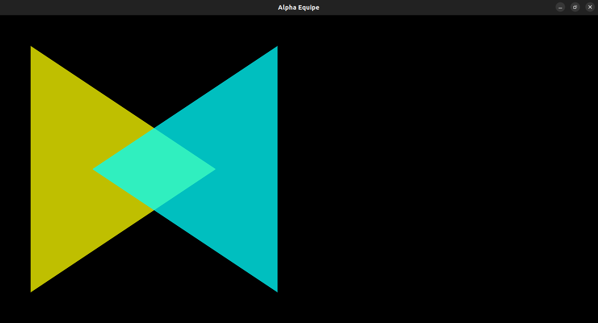
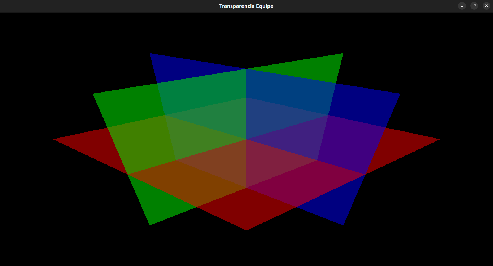
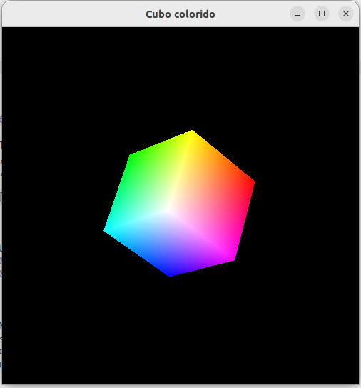
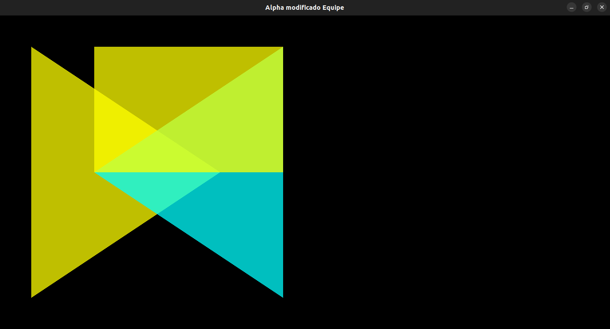

O Laboratório visa executar os projetos, e verificar os conceitos apresentados sobre: cores e mistura.
Laboratório 5 - Cores e Mistura
Atualizado em 10/11/2022 ás 16:03
Introdução à Estrutura de OpenGL
Atividades
Foi realizado o dowload e execução dos arquivos de código disponibilizados de dados de cores e mistura.
1°. Projeto: "smooth.c"
Figura 1 - Resultado do código "smooth.c".
Respondendo as questões solicitadas. Qual o formato usado no comando glColor? O formato usado no comando é glColor3f Qual efeito ocorre quando cada vertice possui uma cor? Acontece uma mistura de cores.
2°. Projeto: "alpha.c"
Figura 2 - Resultado do código "alpha.c".
Respondendo as questões solicitadas. Qual o valor de alpha? Quais os parâmetros da função de mistura? Qual a operação realizada no momento da mistura Todas as questões podem ser resolvidas analisando este pequeno recorte do código glEnable (GL_BLEND); glBlendFunc (GL_SRC_ALPHA, GL_ONE_MINUS_SRC_ALPHA); glShadeModel (GL_FLAT); glClearColor (0.0, 0.0, 0.0, 0.0);
h3>3°. Projeto: "transparencia".c" Figura 3 - Resultado do código "transparencia.c".
Códigos Fonte
Foram realizados os dowloads, modificações e execuções dos arquivos de código e de dados de cores e mistura.
Exercícios para Entregar
Figura 4 - Resultado do Exercício 1.
Exercícios para Entregar
Figura 5 - Resultado do Exercício 2.
Analise e conclusão:
- Utilizando os conceitos aprendidos na disciplina foi possivel aprofundar os fundamentos de cores e misturas utilizando a linguagem C++ e a biblioteca OpenGL.